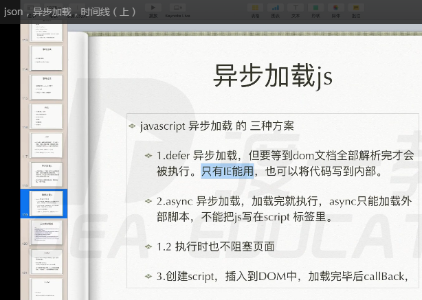

defer IE , async h5
https://www.cnblogs.com/liuzhendong/p/4309790.html
IE的 script 元素支持onreadystatechange事件，不支持onload事件。 IE10-11 元素 不支持onreadystatechange事件 (document支持哦哦)
FF的script 元素不支持onreadystatechange事件，只支持onload事件。
如果要在一个 script s"xx.js"> 加载完成执行一个操作，FF使用onload事件就行了，IE下则要结合onreadystatechange事件和this.readyState，以下是IE的一个例子：
script type="text/javascript" src="xx.js" onreadstatechange="if(this.readyState=='load') alert('loaded');"script
this.readyState的值为'loaded'或者'complete'都可以表示这个script已经加载完成．
如何结合IE和FF的区别?参考一下jquery的源码：
var script = document.createElement('script');
script.src="xx.js";
script.onload = script.onreadystatechange = function(){
if( ! this.readyState //这是FF的判断语句，因为ff下没有readyState这人值，IE的readyState肯定有值
|| this.readyState=='loaded' || this.readyState=='complete' // 这是IE的判断语句
){
alert('loaded');
}
};
XMLHttpRequest 对象的 onload 回调函数是在异步请求加载完成后所执行的函数，当JavaScript 监测到请求的数据全部传输完成后就会触发该函数。
而 open() 函数设置异步请求的 method、URL 和同步方式等参数，执行 open() 后再执行 send() 函数才开始向服务器发送请求。
另外，onload 回调函数实际上是 XHR2 中新加入的功能，部分浏览器可能不支持这个函数名。要避免不兼容的现象，可以使用传统 XMLHttpRequest，如：
//省略其他代码
request.onreadystatechange=function() // 状态改变回调函数
{
// 判断 request.readyState==4 的效果等同于 onload
if(request.readyState==4 && request.status==200)
{
// 加载且响应正常完成后执行的代码....
}
}
request.open("GET",url,true); // 打开对象，也可以说是设置参数
request.send(); // 发送请求
request.onreadystatechange=function() // 状态改变回调函数
{
// 判断 request.readyState==4 的效果等同于 onload
if(request.readyState==4 && request.status==200)
{
// 加载且响应正常完成后执行的代码....
}
}
request.open("GET",url,true); // 打开对象，也可以说是设置参数
request.send(); // 发送请求
还有一些误解需要澄清一下，
window.onload 回调函数其实是在页面加载完成后（包括图片内容的显示）才会执行，并不是页面加载的等待过程中就执行。
request.open() 并没有发送请求，只是设置一些参数，在 send() 时才会发送（注意不要漏写这条语句），发送后就会进入 readyState 监听状态，
当 readyState 的值有改变就会执行 onreadystatechange 回调函数，当异请求的步数据接收完成（即readyState 变为 4）后就会执行
onload 回调函数（注意仅在 XHR2 中有效）。
var script = document.createElement('script');
script.type = "text/javascript";
script.src = "js/async.js"; // 开始加载
document.head.appendChild(script); //执行
// aftrerLoad(); 报错， 还没加载完就执行
// safari chrome firefox
script.onload = function () {
aftrerLoad();
}
// ie 状态码
if(script.readyState){
console.log(script.readyState);
script.onreadystatechange = function () {
console.log(script.readyState);
if(script.readyState=='complete' || script.readyState=='loaded'){
aftrerLoad();
}
}
}else{
script.onload = function () {
aftrerLoad();
}
}